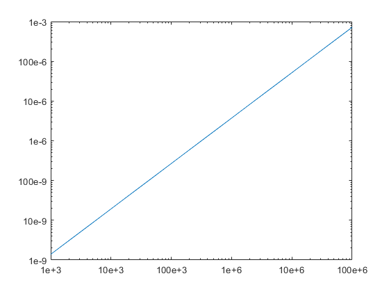
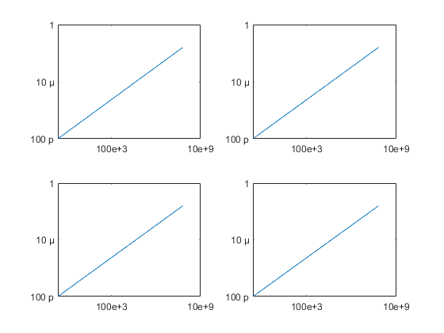

num2eng examples
num2eng converts an input numerical value into an engineering-formatted string, in either scientific format with multiples-of-three exponent, or using SI prefixes e.g. k, M, n, p etc. It can also process the tick labels on graphs and colorbars to format them according to your options.
It supports scalar, vector, and matrix inputs, and complex number inputs. Up to twenty options give extensive control over the formatting of the output string(s).
num2eng has two different calling syntaxes:
- string = num2eng(input,[useSI],[useMu],[spaceAfterNum],[sigFigs],[fullName],[useMinus],[useInf],[trailZeros],[pad],[cellOutput]), where input variables in square brackets are optional - i.e. with this syntax, the function accepts anywhere from 1 to 11 inputs, inclusive.
- string = num2eng(input,optionsStruct), where the optionsStruct is a structure with anywhere from 1 to 20 fields, named as per the options from syntax style 1, or ten additional options only accessible via this call syntax: noExp4Tenths, expWidth, expSign, expForce, unit, noPlural, capE, smallCapE, fracMant, and axes
Please note that throughout this document, the term "string" is referring to a vector/array of characters, rather than MATLAB's "string" data type
Contents
- Basic usage
- num2eng handles Inf and NaN inputs
- num2eng handles complex number inputs
- num2eng handles vector inputs
- num2eng handles matrix inputs
- 1st option (useSI): use SI prefix instead of scientific notation
- 2nd option (useMu): for numbers with magnitude in the range [1e-6, 1e-3), use the Greek mu character (U+03BC) as SI prefix
- 3rd option (spaceAfterNum): include a space after the number, even if there is no prefix
- 4th option (sigFigs): change the number of significant figures in the output
- 5th option (fullName): use the full SI prefix name, rather than just a letter
- 6th option (useMinus): for negative numbers, use the proper minus character (U+2212) instead of hyphen-minus
- 7th option (useInf): use the infinity symbol (U+221E) for infinite inputs
- 8th option (trailZeros): pad numbers with trailing zeros to always give the specified number of significant digits
- 9th option (pad): pad strings to the specified length
- 10th option (cellOutput): control output format for cases where input is vector or 2D matrix
- Using an options structure instead of individual option inputs
- Additional options available only via the optionsStruct:
- noExp4Tenths: For numbers in the range [0.1,1), don't use exponents or SI prefixes
- expWidth: set the character width of the exponent part of the output (excluding the sign character)
- expSign: control if sign of exponent is always shown or only shown for negative numbers
- expForce: force exponent part to always be shown, even if it's zero
- unit: provide a string/strings to use as measurement units appended at the end of the output string
- noPlural: override the automatic pluralisation of units
- capE & smallCapE: use an upper-case "E" for the exponent instead of "e"
- fracMant: force a fractional mantissa, in the range [0.001, 1)
- Change the tick labels on a graph
- Change the tick labels on a colorbar
Basic usage
Calling num2eng with no options returns a string in scientific notation format with multiple-of-three exponent (aka engineering notation)
num2eng(0.001) num2eng(78e10) num2eng(-1e-19)
ans =
'1e-3'
ans =
'780e+9'
ans =
'-100e-21'
num2eng handles Inf and NaN inputs
num2eng(Inf) num2eng(-Inf) num2eng(NaN)
ans =
'+Inf'
ans =
'-Inf'
ans =
'NaN'
num2eng handles complex number inputs
num2eng(45e13 - 0.2i)
ans =
'450e+12 - 200e-3i'
num2eng handles vector inputs
num2eng([61e-16 inf NaN 7.8e2])
ans =
1×4 cell array
{'6.1e-15'} {'+Inf'} {'NaN'} {'780'}
num2eng handles matrix inputs
num2eng([61e-16 inf; NaN 7.8e2]) num2eng((-1).^round(rand([2, 4, 2])).*10.^(48*rand([2, 4, 2])-24))
ans =
2×2 cell array
{'6.1e-15'} {'+Inf'}
{'NaN' } {'780' }
2×4×2 cell array
ans(:,:,1) =
{'1.1372e+9' } {'33.047' } {'-414.86e-24'} {'592.43e-6' }
{'-2.5439e-9'} {'819.05e+15'} {'1.0453' } {'-25.442e+18'}
ans(:,:,2) =
{'1.7734e+6' } {'-12.292e+3' } {'-31.846e-3'} {'-395.36e-18'}
{'-153.37e+21'} {'-22.416e+15'} {'-148.14' } {'-2.8455e+6' }
1st option (useSI): use SI prefix instead of scientific notation
Setting useSI true gives output strings with SI prefixes. There is always a non-breaking space between the number and the prefix, as per the SI standard:
num2eng(0.001 , true) num2eng(78e10 , 1) num2eng(-1e-19, true)
ans =
'1 m'
ans =
'780 G'
ans =
'-100 z'
If input number is out-of-range for an SI prefix, the function will fall back to engineering notation:
num2eng(2.56e29, true)
ans =
'256e+27'
2nd option (useMu): for numbers with magnitude in the range [1e-6, 1e-3), use the Greek mu character (U+03BC) as SI prefix
num2eng(10e-6, true) num2eng(10e-6, true, true)
ans =
'10 u'
ans =
'10 μ'
3rd option (spaceAfterNum): include a space after the number, even if there is no prefix
num2eng(0.001 , true , false, 0) num2eng(0.001 , true , false, 1) num2eng(0.001 , false, false, true) num2eng(2.56e29, true , false, true) num2eng(1.5 , true , false, true)
ans =
'1 m'
ans =
'1 m'
ans =
'1e-3 '
ans =
'256e+27 '
ans =
'1.5 '
4th option (sigFigs): change the number of significant figures in the output
num2eng(999e3) num2eng(999e3,true,false,false,1) num2eng(8747268847436362332849,true,false,false,12)
ans =
'999e+3'
ans =
'1 M'
ans =
'8.74726884744 Z'
5th option (fullName): use the full SI prefix name, rather than just a letter
num2eng(0.001 , true, false, false, 5, true) num2eng(2.56e29 , true, false, false, 5, true) num2eng(1.5 , true, false, false, 5, true) num2eng(4.5645667e-6, 1 , 1 , 1 , 6, 1) num2eng(-15.7e10 , true, false, false, 5, true)
ans =
'1 milli'
ans =
'256e+27'
ans =
'1.5'
ans =
'4.56457 micro'
ans =
'-157 giga'
6th option (useMinus): for negative numbers, use the proper minus character (U+2212) instead of hyphen-minus
num2eng(-0.001 , false, false, false, 5, false) % useMinus defaults to false num2eng(-0.001 , true , false, false, 5, true , true) num2eng(-0.001 , false, false, false, 5, false, true) num2eng(1000-0.001j, false, false, false, 5, false) % useMinus defaults to false num2eng(1000-0.001j, false, false, false, 5, false, true)
ans =
'-1e-3'
ans =
'−1 milli'
ans =
'−1e−3'
ans =
'1e+3 - 1e-3i'
ans =
'1e+3 − 1e−3i'
7th option (useInf): use the infinity symbol (U+221E) for infinite inputs
num2eng(Inf , false, false, false, 4, false, false, true) num2eng(Inf , true , true , true , 4, true , true , true) num2eng(-Inf, true , true , true , 4, true , true , true)
ans =
'+∞'
ans =
'+∞ '
ans =
'−∞ '
8th option (trailZeros): pad numbers with trailing zeros to always give the specified number of significant digits
num2eng(1 , 1, 0, 1, 5, 0, 0, 0, 0) % trailZeros is false (default) num2eng(1 , 1, 0, 1, 5, 0, 0, 0, 1) % trailZeros is true num2eng(-1.34e-7, 1, 0, 1, 5, 0, 0, 0, 1)
ans =
'1 '
ans =
'1.0000 '
ans =
'-134.00 n'
9th option (pad): pad strings to the specified length
Right-justify by using positive value for pad:
num2eng(-1.34e-7, 1, 0, 1, 5, 0, 0, 0, 0, 10)
ans =
' -134 n'
Left-justify by using negative value for pad:
num2eng(-1.34e-7, 1, 0, 1, 5, 0, 0, 0, 0, -10)
ans =
'-134 n '
You can use trailZeros and pad together:
num2eng(-1.34e-7, 1, 0, 1, 5, 0, 0, 0, 1, 10)
ans =
' -134.00 n'
10th option (cellOutput): control output format for cases where input is vector or 2D matrix
cellOutput true (default value) gives cell-array output with one cell per input element:
num2eng([-0.001 1e6 12e8], true, true, false, 4, false, false, false, false, 0, true)
ans =
1×3 cell array
{'-1 m'} {'1 M'} {'1.2 G'}
cellOutput false gives a single string output:
num2eng([-0.001 1e6 12e8] , true , true, false, 4, false, false, false, false, 0, false ) num2eng([-0.001 1e6 12e8; 3 56e32 6.78e7], false, true, false, 4, false, false, false, true , 0, false )
ans =
'-1 m 1 M 1.2 G'
ans =
'-1.000 m 1.000 M 1.200 G
3.000 5.600e+33 67.80 M'
Using an options structure instead of individual option inputs
Fields of the option structure should be named according to the individual options as described above:
num2eng(18.9e-10, struct('fullName',true) ) num2eng([12.345563e-10 89e5 -0.00003; 0.1 14.5e2 77e8], struct('sigFigs',7, 'cellOutput',false, 'pad',10) ) num2eng([61e-16 inf NaN -inf 7.8e2], struct('useInf',true) )
ans =
'1.89 nano'
ans =
'1.234556e-9 8.9e+6 -30e-6
100e-3 1.45e+3 7.7e+9'
ans =
1×5 cell array
{'6.1e-15'} {'+∞'} {'NaN'} {'-∞'} {'780'}
Be careful with letter case; the option name must match exactly for it to be recognised by num2eng:
num2eng(18.9e-10, struct('FullName',true) )
WARNING: Ignoring unknown option "FullName"
ans =
'1.89e-9'
Note: you can of course still use the function hints to check the names of the first 10 options, as long as the cursor is not inside the struct call:
Additional options available only via the optionsStruct:
noExp4Tenths: For numbers in the range [0.1,1), don't use exponents or SI prefixes
num2eng(0.2)
num2eng(0.2,struct('noExp4Tenths',true))
ans =
'200e-3'
ans =
'0.2'
expWidth: set the character width of the exponent part of the output (excluding the sign character)
expWidth set to 0 (default) gives whatever minimum width is necessary to accommodate the exponent's digits:
num2eng(7892,struct('expWidth',0)) num2eng(789e14,struct('expWidth',0))
ans =
'7.892e+3'
ans =
'78.9e+15'
expWidth greater than zero will pad the exponent with leading zeros to give the desired width:
num2eng(7892,struct('expWidth',3)) num2eng(789e14,struct('expWidth',3))
ans =
'7.892e+003'
ans =
'78.9e+015'
The exponent will never be truncated, so if expWidth is too small to accommodate all the digits in the exponent, it will be overridden:
num2eng(789e140,struct('expWidth',2))
ans =
'78.9e+141'
expWidth does not count the sign character:
num2eng(789e-14,struct('expWidth',3))
ans =
'7.89e-012'
expSign: control if sign of exponent is always shown or only shown for negative numbers
expSign true (default value) always gives a sign character:
num2eng(3000,struct('expSign',1)) num2eng(0.3,struct('expSign',1))
ans =
'3e+3'
ans =
'300e-3'
expSign false gives a sign character only for negative exponents:
num2eng(3000,struct('expSign',0)) num2eng(0.3,struct('expSign',0))
ans =
'3e3'
ans =
'300e-3'
expForce: force exponent part to always be shown, even if it's zero
num2eng(15,struct('expForce',0)) % expForce is false (default) num2eng(15,struct('expForce',1)) % expForce is true
ans =
'15'
ans =
'15e+0'
unit: provide a string/strings to use as measurement units appended at the end of the output string
num2eng(0.08,struct('useSI',true,'unit','A'))
ans =
'80 mA'
If full words are provided as the unit strings, they will be automatically pluralised when appropriate:
num2eng(0.08,struct('fullName',true,'unit','amp')) num2eng(1e-3,struct('fullName',true,'unit','amp'))
ans =
'80 milliamps'
ans =
'1 milliamp'
If input number is a vector/array/matrix, the provided unit is appended to all output strings:
num2eng([0.08,1e-3],struct('fullName',true,'unit','amp'))
ans =
1×2 cell array
{'80 milliamps'} {'1 milliamp'}
If you need different units for different elements of the input, provide the unit strings in a cell array (note the double set of curly braces; this is due to how the built-in MATLAB function struct works):
num2eng([0.08,1e-3],struct('fullName',true,'unit',{{'amp','watt'}}))
ans =
1×2 cell array
{'80 milliamps'} {'1 milliwatt'}
noPlural: override the automatic pluralisation of units
Set to true to override the automatic pluralising of unit strings:
num2eng(0.08,struct('fullName',true,'unit','amp','noPlural',true))
ans =
'80 milliamp'
capE & smallCapE: use an upper-case "E" for the exponent instead of "e"
num2eng(77e4) num2eng(77e4,struct('capE',true)) num2eng(77e4,struct('smallCapE',true))
ans =
'770e+3'
ans =
'770E+3'
ans =
'770ᴇ+3'
fracMant: force a fractional mantissa, in the range [0.001, 1)
Can be used to unambiguously show accuracy via the significant figures, e.g.
num2eng(1e-4,struct('useMu',1, 'unit','m'))
ans =
'100 μm'
is the above 100 um +/- 5 um, or 100 um +/- 50 um?
num2eng(1e-4,struct('useMu',1, 'unit','m', 'fracMant',1))
ans =
'0.1 mm'
the above is 100 um +/- 50 um
num2eng(1e-4,struct('useMu',1, 'unit','m', 'fracMant',1, 'sigFigs',2, 'trailZeros',1))
ans =
'0.10 mm'
the above is 100 um +/- 5 um
Change the tick labels on a graph
By default, an axis with logarithmic scale will have scientific notation tick labels:
loglog([100 1e9],[1e-10 1e-2])
Change the x-axis tick labels to engineering notation. (By default, num2eng will process the x-axis only):
num2eng(gca)
The num2eng option axes is used to configure num2eng when processing axes or figure handles. Valid settings are:
- Any combination of 'x', 'y', 'z', e.g 'yx', 'xy', 'xz', 'yz', 'zy', 'xyz', 'yzx', etc. etc.
- 'off'
e.g. Change the y-axis tick labels:
num2eng(gca,struct('axes','y'))
Listeners have automatically been created, so if the axes change, the labels will automatically update:
axH = gca; axH.XLim = [1e3 1e8];
If a figure contains several axes, you can easily modify the tick labels for all axes, by passing the figure handle to num2eng:
for i = 1:4, subplot(2,2,i); loglog([100 1e9],[1e-10 1e-2]); end num2eng(gcf,struct('axes','xy'))
When processing a figure or axes, all the other num2eng options are available. For example, use SI units and mu character for y-axis:
num2eng(gcf,struct('useMu',true,'axes','y'))
Revert a set of axes (in this case, the bottom-right axes) to default:
num2eng(gca,struct('axes','off'));

Revert all axes in a figure to default:
num2eng(gcf,struct('axes','off'));
Change the tick labels on a colorbar
figure; surf(peaks*1e8); barH = colorbar; num2eng(barH);
listeners keep the colorbar updated:
axH = gca; axH.Children.ZData = axH.Children.ZData/100;